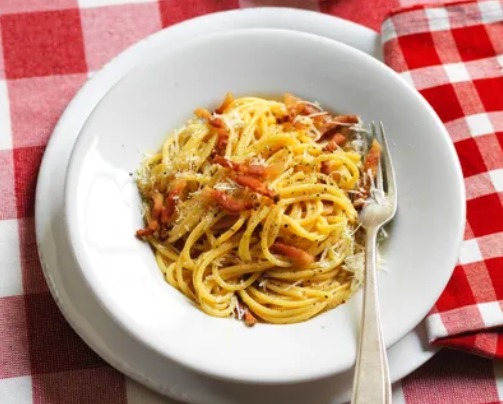

Welcome to the Classic Carbonara Recipe!

A plateful of pasta carbonara can transport you to a Roman trattoria. Made with just a few ingredients, it's simple to recreate at home. Read on for the classic carbonara recipe.
Today we are going to learn how to cook classic carbonara!
We are going to need :
- 12 oz. tonnarelli, spaghetti, mezze maniche or rigatoni
- 4 oz. guanciale or rindless bacon
- ¼ cup grated Pecorino Romano (or Parmigiano Reggiano)
- 4 fresh large egg yolks
- Salt
- Black pepper
After you have gathered all the ingredients, we can now get started! All you need to do is follow the directions below :
- Cut the guanciale into ¼″ layers, then into long, 2″ strips.
- Combine the egg yolks with the grated cheese and a pinch of black pepper.
- Brown the strips of guanciale for 2 minutes in a pan, until crisp, then turn off the heat and leave to cool.
- Bring a large pot of water to a boil. Add salt. Cook the pasta, setting aside a ladleful of the pasta cooking water, until al dente. Drain.
- Pour the reserved hot water into the frying pan with the cooled guanciale, then transfer the pasta to the same pan and mix together. Add the yolk and cheese mixture, stirring rapidly.
- In the warm pan with the hot pasta, the eggs will cook gently and become creamy – don't stir over heat otherwise the carbonara will become lumpy. It's important to stir quickly to prevent the yolks from congealing and taking on the texture of scrambled eggs.
- Season with freshly milled black pepper and serve immediately on heated plates.
Our Classic Carbonara is now ready! Jump right in!